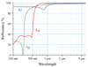

reflectance

Definition: The reflectance of the surface of a material is its effectiveness in reflecting radiant energy. It is the fraction of incident electromagnetic power that is reflected at the boundary. Reflectance is a component of the response of the electronic structure of the material to the electromagnetic field of light, and is in general a function of the frequency, or wavelength, of the light, its polarization, and the angle of incidence. The dependence of reflectance on the wavelength is called a reflectance spectrum or spectral reflectance curve.
Source: Wikipedia
Wikipedia Page
Wikidata Page